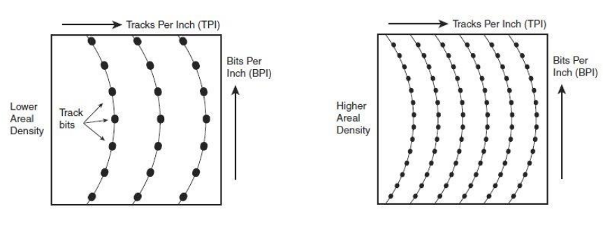

La estructura lógica de un disco duro tiene las siguientes partes.
- Pistas. La superficie del disco se divide en anillos concéntricos denominados pistas.
- Sectores. Son subdivisiones de las pistas. Suele haber entre 15 y 63 sectores por pista. El tamaño típico de un sector son 512 Bytes.
- Cluster. Es la cantidad de sectores que se leen conjuntamente en una operación de lectura o escritura.
- Cilindros. Esta compuesto por todas las pistas que están en la misma posición en las diferentes caras de cada uno de los platos. Por ejemplo, un disco con cuatro platos tiene un cilindro de 8 pistas.
Como ejemplo, si un disco tiene 80 pistas, 18 sectores y dos caras, se obtiene que 80 pistas x 18
sectores/pista x 2 caras x 512 bytes = 1,44 MB de capacidad de almacenamiento.
El tamaño del cluster influye en el aprovechamiento del espacio físico del disco, ya que si un archivo no llena por entero el cluster, el espacio sobretante quedará vacio. Por ejemplo, imaginemos que tenemos un clúster de 32 KB, (El DOS y Windows 95 lo utilizaban por defecto en los discos duros). Esto no tendría importancia si no fuera porque un clúster, como ya hemos dicho, es la mínima unidad de lectura o escritura, a nivel lógico, del disco. Es decir, cuando grabamos un archivo, por ejemplo de 10 Kb, estamos empleando un clúster completo, lo que significa que se desperdician 22 Kb de ese clúster. Imaginaos ahora que grabamos 100 ficheros de 10 Kb; perderíamos 100x22 Kb, más de 2 Megas.
En el campo del almacenamiento en disco, un factor muy importante es la densidad superficial. Ésta mide lo concentrada que se halla la información en el disco. Por ello, si se comparan discos de igual tamaño, a mayor densidad superficial, mayor capacidad de almacenamiento. La densidad superficial se calcula como el producto de otras dos densidades: la densidad de pistas y la densidad lineal.
La densidad de pistas indica la cantidad de pistas que existen por unidad de longitud, es decir lo “apretadas” que están las pistas. En esta definición, la longitud se mide en sentido radial, desde el centro del disco, y las unidades son pistas por pulgada (PPI) o tracks per inch (TPI).
La densidad lineal, informa sobre lo comprimida que se halla la información dentro de las pistas (es decir, lo “apretados” que están los bits en cada pista) que se mide en bits por pulgada (BPP) o bits per inch (BPI).

Finalmente, la estructura de mayor nivel son las particiones o volúmenes, que no son más que grupos de cilindros contiguos. El disco se divide en varias particiones, que el sistema operativo hace ver como unidades lógicas diferentes. Aunque se trata del mismo disco, el usuario aprecia varias letras de unidad (en Windows), y cree estar trabajando con varios discos duros de menor tamaño. Una de las ventajas de las particiones consiste en que los cabezales se deberán mover dentro de un grupo conexo de cilindros de menor tamaño, y por tanto deberán realizar menor recorrido para encontrar el cilindro deseado en cada acceso. Esto se traduce en una mayor velocidad de acceso a la información.